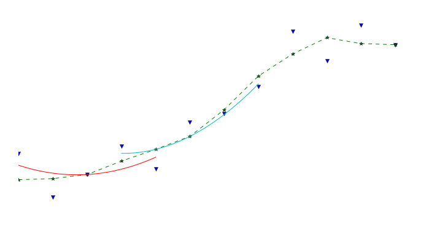
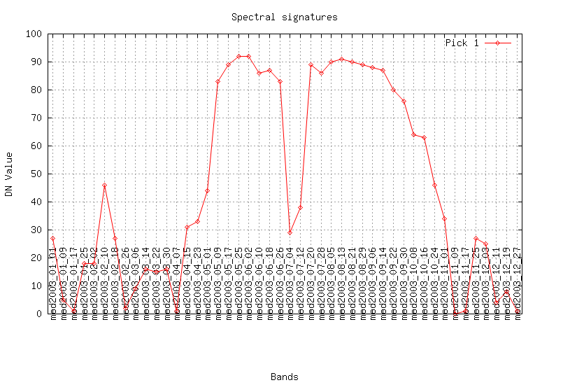
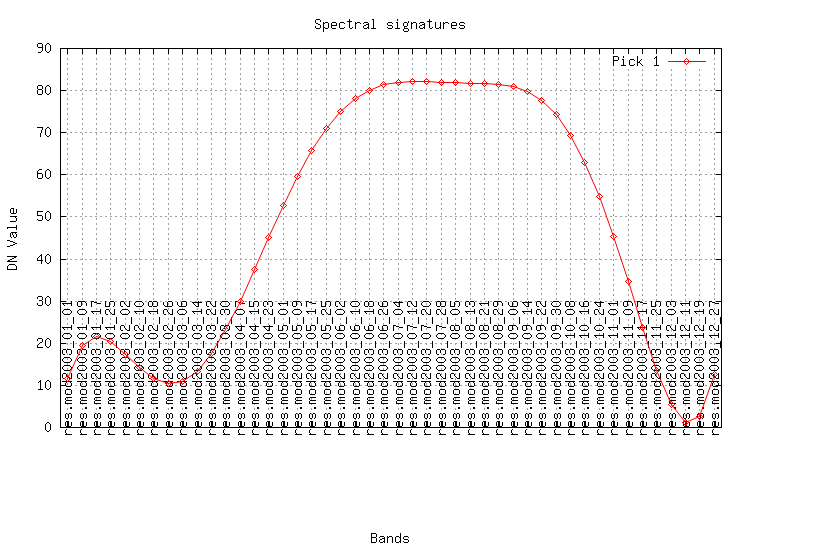

class: center, middle # Identification of types of vegetation cover using recontructed spectral curves ## Description of GRASS GIS module 'r.series.decompose' ### Dmitry Kolesov (dmitry.kolesov@nextgis.ru), Ilya Filippov --- # Contents ### 1. History ### 2. Methods ### 3. Implementation --- # Initial problem To increase the quality of identification of <<difficult>> types of vegetation using time series of remote sensing data. # Objectives * To reconstruct seasonal change of spectral curves or VI (noise removal). * To classify vegetation types using cleaned-up data series. * Assess the accuracy of the classification of <<difficult>> vegetation types. # Hypothesis Different types of vegetation have different phenologies that are reflected by VI curves. --- ## Classic approach to identify vegetation types using RS data .center[  ] .center[Averaged characteristic curves for different objects.] .small[ * Different objects look different in different spectral bands and imaging in several bands can give more information. * Each pixel with coords `\((x,y)\)` can be represented by a vector is brightness of each separate image: `$$ \overline{P}(x,y) = \{b_1(x,y), b_2(x,y), \dots, b_n(x,y) \} $$` где `\(\overline{P}\)` - brightness vector, `\(b_i(x,y)\)` - brightness value in band `\(i\)` at the point with coordinates `\((x,y)\)`. ] --- # Pros and cons of one-time images ## Pros * Methods are well-studied. * Easier to interpret data. ## Cons * Each image is made under unique conditions (geometry of Sun-Earth-Satellite system; atmospheric conditions; changes on the ground) => <<good>> parameters for analysis on one image won't be optimal for another. * As atmosphere is heterogeneous same objects will look different in different parts of an image. * Different objects can look the same. ??? О том, что не хорошо в использовании одномоментных снимков. --- # Using time series ## Pros * Posibility to analyze the form of the curve of seasonal changes; * Posibility to filter out noises due to atmosphere and other conditions; ## Cons * Time series are available only with low resolution; * Complicated interpretation. --- class: center, middle # Why do we need time-series analysis? ## A real-case example --- .center[  ] Sample «raw» NDVI series, extracted from MOD13 for: 1 - bogs forested with birch; 2 - burns regrown with birch. --- .center[  ] Sample NDVI series after removing high-frequency components for: 1 - bogs forested with birch; 2 - burns regrown with birch. --- ## Separability of classes by FFT coefficients .center[  ] Sample separability by first FFT coefficients for: 1 - bogs forested with birch; 2 - burns regrown with birch. --- class: center, middle # Methods overview --- # Methods overview Two cases for processing of time series RS data for further classification. 1. Recovery (modelling) of analyzed image (reflectance or a product, such as NDVI) for any given date and then classification of several such images for particular dates. 2. Extraction of metrics from the images and classification based on them. Intermediate options - methods that allow to recover (model) images and extracts metrics at the same time. --- # Feature extraction Classic algorithms for extraction or synthesis of fetures: * PCA; * Kohonnen self-organising maps; **Remark:** The methods are well-known; we don't describe them in the notes. --- class: center, middle # Methods for clean-up data --- # Noise removal using Savitsy-Goley filter. .footnote[Jönsson P., Eklundh L. TIMESAT - a program for analyzing time-series of satellite sensor data //Computers & Geosciences. – 2004. – Т. 30.] .small[ Time series `\((t_i, I_i)\)`, `\(i=1, 2, \dots, N\)`. Data in moving window of legth `\(2m +1\)` is approximated using polynomial of dth-degree, coefficients of which are calculated using least squares. Using polynomial the value for filtered curve for the window central point is calculated. Then the window moves and new point on the modelled curve is calculated. And so on. ] .center[  ] **Pros-Cons:** The method is good for smoothing, but it's difficult for feature extracting. --- # Fitting parametric curves Least squares are often used for curve fiting. Give time series `\((t_i, I_i)\)`, `\(i=1, 2, \dots, N\)`. The curve is modelled as: ` $$ f(t) = c_1 \varphi_1(t) + c_2 \varphi_2(t) + \dots + c_M \varphi_M(t), $$ ` where `\(\varphi_1(t)\)`, `\(\varphi_2(t)\)`, ..., `\(\varphi_M(t)\)` any basis functions, а `\(c_1\)`, `\(c_2\)`, ..., `\(c_M\)` - some coefficients. **Pros-Cons:** The method is good for feature extaruction, but selection of good `\(\varphi_1(t)\)`, `\(\varphi_2(t)\)`, ..., `\(\varphi_M(t)\)` is difficult. --- # TIMESAT .footnote[Jönsson P., Eklundh L. TIMESAT - a program for analyzing time-series of satellite sensor data //Computers & Geosciences. – 2004. – Т. 30.] Least squares method is used to fit polynoms together with harmonic functions (`\(\omega=6\pi/N\)`): ` $$ \begin{split} f(t) = & c_1 + c_2 t + c_3 t^2 + c_4 \sin(\omega t) + c_5 \cos(\omega t) + \\ & c_6 \sin(2\omega t) + c_7 \cos(2\omega t) + c_8 \sin(3\omega t) + c_9 \cos(3\omega t) \end{split} $$ ` # Synthesized Landsat .footnote[Zhu Z. et al. Generating synthetic Landsat images based on all available Landsat data: Predicting Landsat surface reflectance at any given time //Remote Sensing of Environment. – 2015. – Т. 162. – С. 67-83.] ` $$ f_{simple}(t) = c_0 + c_1 t + c_2 \sin(\omega t) + c_3 \cos(\omega t) $$ ` ` $$ \begin{split} f_{advansed}(t) = & c_0 + c_1 t + c_2 \sin(\omega t) + c_3 \cos(\omega t) + \\ & c_4 \sin(2\omega t) + c_5 \cos(2\omega t) \end{split} $$ ` ` $$ \begin{split} f_{full}(t) = & c_0 + c_1 t + c_2 \sin(\omega t) + c_3 \cos(\omega t) + \\ & c_4 \sin(2\omega t) + c_5 \cos(2\omega t) + c_6 \sin(3\omega t) + c_7 \cos(3\omega t) \end{split} $$ ` --- # Fourier transform classification .footnote[ Lhermitte S. et al. Hierarchical image segmentation based on similarity of NDVI time series //Remote Sensing of Environment. – 2008. – Т. 112. – №. 2. – С. 506-521. ] Function `\(f(x)\)` is given, defined on the interval `\(x\in (-\pi, pi]\)`. It is known that it can be into series of trigonometric functions (limitations for `\(f(x)\)` are relaxed, in practice any function will suffice): ` $$ f(x) = \frac{a_0}2 + \sum_{n=0}^\infty (a_n\cos nx + b_n \sin nx) $$ ` It is easy to show and coefficients of the series can be calculated using formulae: ` $$ a_n = \frac1{\pi} \int_{-\pi}^\pi f(x) \cos nx dx, \qquad n \ge 0 $$ ` ` $$ b_n = \frac1{\pi} \int_{-\pi}^\pi f(x) \sin nx dx, \qquad n>0 $$ ` Initial interval `\(x\in (-\pi, \pi]\)` can be easily scaled on any symmetrical line segment `\([-L, L]\)`. --- class: center, middle # GRASS GIS module r.series.decompose --- # Why? There aren't open source GIS-tools for noise reduction and feature exctruction. * TIMESAT: isn't open. * R, Python, Julia, ...: you need to program a lot of code. # Goals: * Clean up noise. * Extruct features for classification. * Generate spectral/VI rasters for a period. --- # What the module do Least squares fitting: ` $$ \begin{split} f(t) = & c_1 + c_2 t + c_4 \sin(\omega_1 t) + c_5 \cos(\omega_1 t) + \\ & c_6 \sin(\omega_2 t) + c_7 \cos(\omega_2 t)+ \dots \\ & + c_{n-1} \sin(\omega_k t) + c_n \cos(\omega_k t) \end{split} $$ ` Features: * It doesn't use fixed frequencies. * Linear trend only. Input data: * Raster time series. * List of frequencies. Output data: * Rasters of coefficients `$$c_1, c_2, \dots, c_n.$$` * Rasters of clean-up data. --- # Installation ### Requirements * GRASS GIS 7 * SciPy * GRASS module r.mregression.series (addons). ### Installation The modules are avialable in GRASS GIS addons. 1. Install r.mregression.series: ```bash g.extension extension=r.mregression.series operation=add ``` 2. Install r.series.decompose: ```bash g.extension extension=r.series.decompose operation=add ``` --- # Parameters ```bash r.series.decompose input=string[,string,...] result_prefix=string coef_prefix=string timevar_prefix=string freq=value[,value,...] [--overwrite] [--help] [--verbose] [--quiet] [--ui] ``` * input * result_prefix * coef_prefix * timevar_prefix * freq **Workflow** 1. Create list of rasters. Rasters must be equally spaced time series (insert NULLs to create equally spaced time-series). 2. If the rasters have clouds and shadows, mask the pixels. 3. Select frequencies. ```bash r.series.decompose input=raster1,raster2,raster3,... \ coef_prefix="coef." timevar_prefix="dec." result_pref="res." freq=3,6,9 ``` --- # Output data The most important output data: * Filtered data res.raster1, res.raster2, res.raster3, ... * **Rasters of coefficients:** coef.const, coef.cos_fr3, coef.cos_fr3, coef.cos_fr6, coef.sin_fr6, coef.sin_fr9, coef.sin_fr9, coef.time ### Coeffitients: * Classification of vegetation types: 1. Coefficcients describe the curves. 2. Rasters can be used as 'bands' in classification software. * Generate spectral/VI rasters for a period. 1. Пусть t -- интересующая дата. 2. Use t and the coefficients: ` $$ \begin{split} f(t) = & c_1 + c_2 t + c_4 \sin(\omega_1 t) + c_5 \cos(\omega_1 t) + \\ & c_6 \sin(\omega_2 t) + c_7 \cos(\omega_2 t)+ \dots \\ & + c_{n-1} \sin(\omega_k t) + c_n \cos(\omega_k t) \end{split} $$ ` --- .center[  ] .center[  ] --- # Known issues 1. The module uses many open files. To solve the problems, increase the OS limit. (Linux: /etc/security/limits.conf) 2. The module is slow. 3. Searching of "good" frequencies is difficult task => fitted curve can be wrong. --- # Plans * Speed optimization. * Parameters for polynomial trend. * Sadden changes.